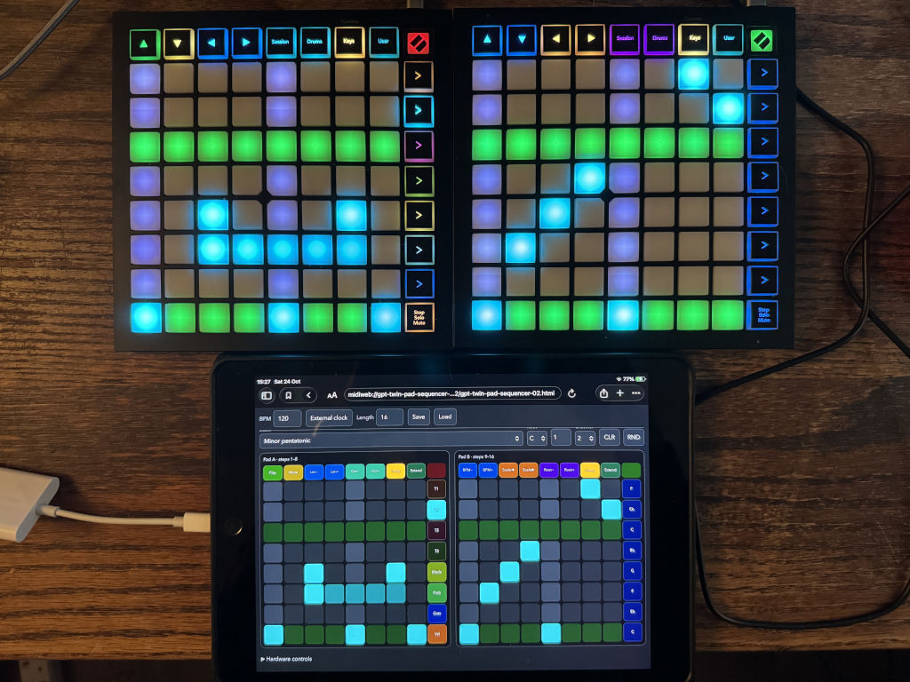
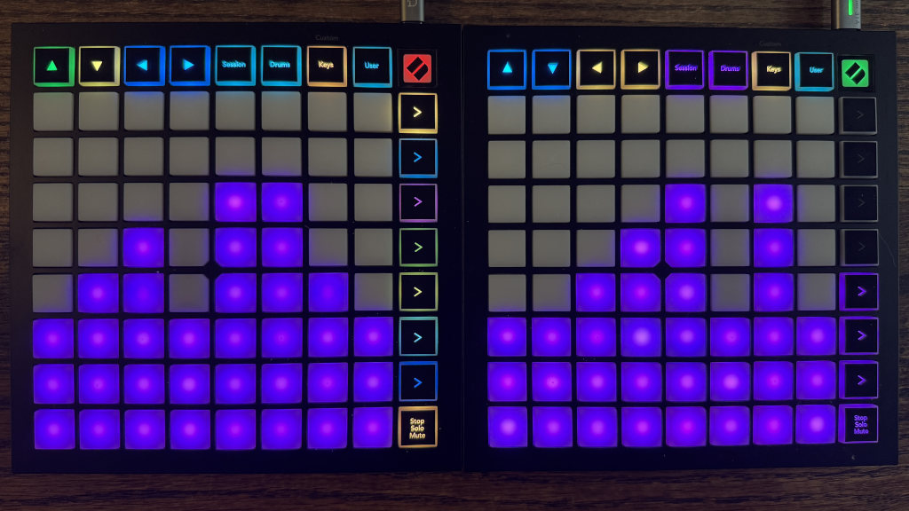
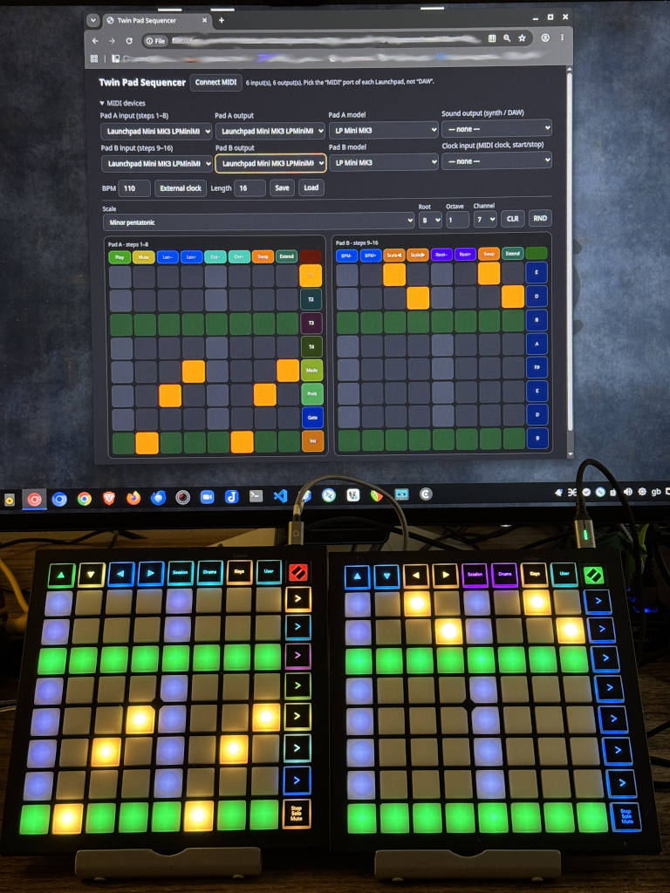
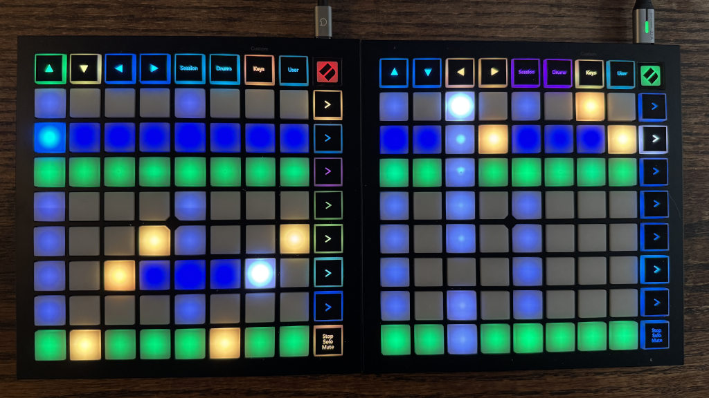

Twin Pad Sequencer#
Click here to
Or download the file from the Twin Pad GitHub Repository
The GitHub repository contains .sha256 and .md5 files for every version of Twin Pad so it is possible to check that the file you have is genuine.
If you like Twin Pad ☕ Buy me a coffee ☕ - no obligation!
 |
 |
 |
 |
Twin Pad Features
Twin Pad Sequencer — Features
Sequencing
- 4 tracks, each with 8 note lanes and 16 steps. Pad A shows steps 1–8 and Pad B shows steps 9–16.
- Sequence length of 1–16 steps. Notes beyond the length are kept and return when you lengthen the sequence. Changing the length never restarts playback.
- Held notes that last several steps.
- Per-lane loop ranges for polymetric patterns: every lane can loop over its own start and end step.
- Five stepping modes per track: forward, reverse, ping-pong, random and random walk. Any single lane can override the track’s mode.
- Per-step velocity, gate length and probability, drawn on the pads or with exact on-screen sliders. A master slider sets all 16 steps at once.
- Mute lanes, tracks, steps or the whole app. Clear a track, lane or step. Randomize a track.
Pitch
- Scales per track: minor and major pentatonic, the seven diatonic modes (Ionian, Dorian, Phrygian, Lydian, Mixolydian, Aeolian, Locrian), Chromatic and Drums (General MIDI drum map). A shared Root note applies to all tracks.
- Sharps and flats on the Chromatic scale. Lanes run C D E F G A B C. Single notes or whole lanes can be sharpened or flattened, following the rule that E and B cannot be sharpened and F and C cannot be flattened.
- Octave control at three levels, each from −3 to +3: per track, per lane and per note. Press Oct− or Oct+ first, then choose a note pad, a lane button or a track button. The offsets add up and also apply to drum tracks.
- MIDI channel per track. Drums default to channel 10.
Timing and sync
- Internal clock with lookahead scheduling using Web MIDI timestamps, 30–300 BPM.
- External MIDI clock (24 PPQN) with Start, Continue and Stop messages from a chosen clock input.
Hardware and interface
- Twin Pad can be operated solely through the web interface. Launchpads are optional.
- One or two Launchpads. With one pad, a Swap button switches between steps 1–8 and 9–16 together with the second set of controls.
- Supported Launchpad models (different models can be mixed):
- LP Mini MK3: Launchpad Mini MK3 (default)
- LP X: Launchpad X
- LP Pro: Launchpad Pro and Pro MK2
- LP X-Y Mode: Original Launchpad, X-Y layout
- LP Drum Mode: Original Launchpad, Drum Rack layout
- The Launchpad Pro MK3 is not supported.
- Everything on the hardware is also on screen. The on-screen pads mirror the Launchpad LEDs and buttons, and the layout adapts to phones, tablets and desktops, including phone landscape.
Saving
- Autosave in the browser a moment after every change, with automatic MIDI reconnect on load.
- Save / Load a session as
twin-pad-session.jsonfor backups and for moving between computers. Files from older versions load with defaults for anything new.
The Vibe Coding Experiment
The Vibe Coding Experiment
Disclaimer
This app was created with AI assistance. The code was modified and edited manually afterwards. The code should not contain any trackers or malware and should run completely offline without any interaction with the internet.
You use this app at your own risk. The creator of this app, Mark Dammer takes no liability for any damage to person, animal, property, hardware or software caused by the use of this software.
Why a vibe coded app?
I am coding to make a living and I am making electronic music as a means of joy and relaxation. When I had the idea to create this app, I wanted to avoid another project that adds to my screen time and mental exhaustion. Yes, I wanted to have it easy, fun and enjoyable and not take too long to have it ready for playing live. So I decided to walk a path I never walked before because all my professional work is hand coded without any AI involvement. The result is this "hybrid" app that was created using free Claude and ChatGPT accounts together with manual editing.
My plan is to continue this experiment with locally hosted AI models
Why a web app?
Creating an application that runs on almost every platform is often complicated. On top of that, when you want to add mobile devices you have to deal with the quirks of Play Store, App Store and rules and limitations that often neither serve the developer nor the user. So why not create an app that runs in the browser and consists of a single HTML file that can be hosted on a server or run locally and independent from a network connection.
For a long time I am admiring the sequencers found in hardware like Oxi one, Deluge or the Linnstrument while on the other hand these devices are "budget busters" for me. This lead to the idea to create a feature rich performance sequencer that can use two Launchpads as one bigger control surface. This is not meant to be a copy of one of the devices listed earlier but based on my own idea of a performace sequencer.
I hope you will enjoy the result.
Twin Pad Manual
Twin Pad Manual
Twin Pad Sequencer is a step sequencer that runs in your web browser and can be controlled via the web interface or up to two Novation Launchpads. It sends MIDI notes to a synthesizer or DAW. This manual first explains how to use it, then ends with a detailed reference.
Contents 1. Introduction 2. Getting started 3. The screen 4. Basic use 5. Working with the sequence 6. Performance tools 7. Saving and sync 8. Troubleshooting 9. Reference
1. Introduction#
What it does#
- It has 4 tracks. Each track has 8 note lanes and 16 steps.
- The two Launchpads together show one track at a time. Pad A shows steps 1–8 and Pad B shows steps 9–16. Each pad's 8×8 grid is steps across and lanes (notes) up.
- One or two Launchpads: you can use one Launchpad or two. With two, each pad shows half of the sequence. With one, set up only Pad A and leave Pad B on "none"; the pad then shows steps 1–8, and Swap (top row button 7) switches it to steps 9–16 together with the second set of controls (tempo, scale, root, lane buttons). The screen always shows both pads.
- Everything you can do on a Launchpad you can also do on the screen, so the app also works with no Launchpad at all (mouse or touch only).
Requirements#
- Browser: Chromium based browser like Chrome or Edge. Support for the Web MIDI API, including SysEx is essential. For iOS the MIDIWeb app is recommended.
- Hardware (optional): one or two Launchpads: LP Mini MK3, LP X, Launchpad Pro / Pro MK2, or an original Launchpad (X-Y or Drum Rack layout). Different models can be mixed.
- Instrument output: a MIDI input on a synthesizer, DAW or virtual MIDI port. The app makes no sound by itself.
- How to open it: from disk or from
localhost. The page asks for MIDI access when you click Connect MIDI.
Basic ideas#
- Selected track: the pads and the settings row always edit the selected track. The selected track's button is the brightest in the Pad A right column.
- Lane: one row of notes. The bottom row is the lowest note.
- Step: one 16th note. The default length is 16 steps, one bar.
- Modes: several functions (mute, clear, extend note, velocity, gate, probability, stepping mode, loop setting) work as modes. You press a button to enter a mode, press a target, and then the mode ends or you press the button again. Entering one mode cancels another.
2. Getting started#
- Open the page in your browser.
- Click Connect MIDI and allow MIDI access, including SysEx. The status line reports how many inputs and outputs it found.
- Open MIDI devices if it is collapsed (it starts closed on small screens) and set: - Pad A input / output and Pad B input / output: choose the MIDI port of each Launchpad, not the DAW port. With two identical pads, pick the first for A and the second for B. With a single Launchpad, set only Pad A and leave Pad B on "none". - Pad A model / Pad B model: choose the matching Launchpad model (see Launchpad models). The default is LP Mini MK3. - Instrument output: the MIDI output that goes to your synthesizer or DAW. - Clock input: optional, only if you want to sync to another device (see Sync).
- The pads light up. Press Play (top row, first button of Pad A, or on screen).
- Choose a track and click or press notes in the grid. Notes are sent on the channel set for that track.
On the first connect the app sets up the devices for you: it picks the Launchpad ports it finds (first one for Pad A, second one for Pad B), guesses LP X or LP Pro from the port name, and chooses an Instrument output that is not a Launchpad. Automatic setup never uses a port whose name contains "DAW" (and it skips Launchpad "standalone" ports). You can still choose any port yourself in the dropdowns. Your choices are saved and restored the next time the page opens, including the automatic reconnect.
Launchpad models#
| Choice | Use it for |
|---|---|
| LP Mini MK3 | Launchpad Mini MK3 (default). |
| LP X | Launchpad X. |
| LP Pro | Launchpad Pro or Pro MK2. The Pro MK3 is not supported. |
| LP X-Y Mode | The original Launchpad, in its X-Y layout. |
| LP Drum Mode | The original Launchpad, in its Drum Rack layout. |
The two original-Launchpad choices use all eight top-row buttons (CC 68h–6Fh) and have only red and green LEDs with four levels each. Blue and cyan colours therefore show as green, the very dark blue of the loop range is hard to see, and there is no logo LED. Everything works the same otherwise.
3. The screen#
From top to bottom:
- Title row: the Connect MIDI button and a status line with messages and hints.
- MIDI devices: the collapsible device and model selectors.
- Top bar (stays visible while scrolling): - BPM tempo field. - External clock toggle button. - Length of the sequence in steps. - Save and Load buttons.
- Settings row for the selected track: Scale, Root, Octave, Channel, then CLR (clear mode) and RND (randomize).
- The two pads. Each pad on screen copies a Launchpad: - a top row of 8 buttons with a small cell for the logo at its right, - the 8×8 note grid, - a right column of 8 buttons beside the grid. Buttons show the same functions and the same LED colours as the hardware, and you click or tap them like the hardware buttons.
- Hardware controls: a collapsible help section at the bottom.
On a phone in portrait, the two pads are stacked. On a tablet or desktop they sit side by side. On a phone in landscape both pads fit next to each other under the top bar.
4. Basic use#
Playing and stopping#
- Play / Stop: the first button of Pad A's top row. On screen the label changes between Play and Stop.
- Tempo: the BPM field (30–300), or the first two buttons of Pad B's top row (−5 and +5 BPM).
Entering notes#
- Press a pad in the grid to switch a note on or off. Row = lane (pitch), column = step.
- The note takes the colour of the selected track. The playhead is a lit column that moves across the grid.
- Pad A covers steps 1–8 and Pad B covers steps 9–16.
Choosing a track#
- Press T1 to T4 in the Pad A right column (the top four buttons). The track colours are amber, cyan, magenta and lime. The selected track is brightest.
- The grid, scale, octave and channel then show and edit that track.
Choosing notes and sounds for a track#
- Scale (per track): the Scale dropdown or Pad B top row buttons 3 and 4 (previous and next). Lanes are scale degrees from the root up. Drums maps the 8 lanes to General MIDI drum notes.
- Root (all tracks): the Root dropdown or Pad B top row buttons 5 and 6 (on a track set to Chromatic those two buttons become ♭ and ♯, see Chromatic scale). Lanes that are the root note have a dark green background (not in Drums).
- Octave (per track, −3 to +3): the Octave field changes the track octave directly. Pad A top-row Oct− / Oct+ buttons arm an octave change; then press a note pad to change that note, a Pad B lane button to change the whole lane (including empty steps), or a T1–T4 button to change the whole track. Note-specific octave changes reset when the note is switched off and on again.
- Channel (per track, 1–16): the Channel dropdown. Drums use channel 10 by default.
Sequence length#
- Use Length (1–16) or Pad A top row buttons 3 and 4 (shorter and longer).
- Steps beyond the length are dark on the pads and faded on screen. Their notes are kept and come back when you lengthen the sequence again.
- Changing the length while playing never restarts the sequence.
5. Working with the sequence#
Loops per lane (polymetric patterns)#
Each lane can loop over its own range of steps, so lanes of different lengths drift against each other.
- Press a button in the Pad B right column (one per lane; its label shows the lane's note). It turns white.
- Press a pad in that lane for the start step.
- Press a pad in that lane for the end step. The two presses can come in either order.
Pressing the same pad twice gives a one-step loop. Press the lane button again before the second press to cancel and keep the old range. To go back to the full length, set the range from step 1 to step 16.
Lanes with a custom range show dark blue between the start and end, with brighter blue on the first and last step, and their button in the right column is lit blue. The overall length still limits every lane.
Chromatic scale: sharps and flats#
The Chromatic scale starts out like C major: the eight lanes are C D E F G A B C (they follow the Root setting). Single notes can then be sharpened or flattened.
On a track set to Chromatic, Pad B top row buttons 5 and 6 change their job: instead of Root − / +, they become ♭ (flat) and ♯ (sharp) mode buttons (the on-screen labels change too).
- Press ♯ (button 6). It lights orange. Now press a note on the grid to sharpen it. Press an empty pad to create a sharpened note.
- Press ♭ (button 5). It lights blue. Now press a note to flatten it, or an empty pad to create a flattened note.
- Instead of a note, press a lane button in the Pad B right column to apply the accidental to the whole lane: every note in that lane of the selected track is sharpened (or flattened). Lanes that cannot take the accidental (E and B for sharp, F and C for flat) are shown dim and ignored. Empty steps stay empty.
- Press the same button again to leave the mode. Starting another mode also ends it.
Rules: - E and B cannot be sharpened and F and C cannot be flattened. These presses are ignored (an empty pad stays empty). The rule follows the lane's place in the scale, so it still applies after you change the Root. - A note has at most one accidental. Pressing a sharpened note in flat mode (or a flattened note in sharp mode) brings it back to natural. Pressing ♯ on a sharpened note changes nothing. - Deleting a note (pressing it in normal mode) also removes its sharp or flat. - Sharp notes are drawn lighter than natural notes and flat notes darker. On screen they also carry a ♯ or ♭ sign. - Held notes keep their accidental, also when you extend them backwards. - The accidentals are stored in the track but only sound while the track is on Chromatic. If you switch the track to another scale, they are ignored, and they come back when you switch to Chromatic again. Clearing or randomizing a track removes them. - The lane buttons of Pad B keep showing the natural note names. A lane press follows the same one-step rule as a note press, so pressing ♯ on a lane whose notes are already sharp changes nothing, and pressing ♭ brings them back to natural.
Held notes (extend note)#
A note can last several steps. It is played as one held note.
- Press the Extend button (top row button 8 on either pad). It lights bright teal.
- Press an existing note. It turns white.
- Press a step in the same lane, before or after the note.
The note now covers all the steps in between. The extra steps are drawn in a dimmer version of the track colour. To shorten it, press one of the covered steps (the note ends just before it). Press the first step to remove the note. A held note is clipped at the end of its lane's loop.
Velocity, gate length and probability (per step)#
Press Vel, Gate or Prob in the Pad A right column (the bottom three buttons) to open a view in which each column is a step and the height sets the value for all notes in that step. Press the same button again to go back.
- Velocity (default 100): on the pads there are 8 levels from 16 to 127. Sliders on screen give the exact value from 1 to 127.
- Gate length (default 50%): the share of the step a note lasts, from 13% to 100% in 8 levels on the pads, or exactly 1–100% with the on-screen sliders. At 100% a note is held for the whole step. Held (extended) notes ignore the gate.
- Probability (default 100%): the chance that the step is played, 0 = never and 100 = always. On the pads there are 8 levels from 13% to 100%. Press the bottom pad of a column twice to set 0%. The on-screen sliders give the exact value from 0 to 100. A step is decided as a whole: all of its notes play together or are skipped together, and the roll is made again every time the step comes round.
Setting all steps at once: in these views the Pad B right column becomes a master slider. Pressing one of its eight buttons sets all 16 steps of the selected track to that level (top button = highest, bottom = lowest; the buttons are labelled with the value they set). The lit buttons show the average of the steps. In the probability view press the bottom button twice to set 0%. On screen the master slider is one vertical slider beside Pad B.
The views show the playhead. On screen you can drag across several sliders, also from one pad to the other, to draw a curve. A fast swipe fills the sliders it skips. Sliders also work with the arrow keys.
Stepping modes#
A track can play its steps forward, backward and in other orders.
- Press Mode in the Pad A right column (the button directly below T4).
- The five buttons from T1 down to the one under T4 show the modes. Press one: - T1 forward (default) - T2 reverse - T3 ping-pong - T4 random - the Mode button again (below T4) random walk
- The mode applies to the whole track and the selection ends. To leave the selection without choosing, press another mode button such as Prob, Gate or Vel.
To give one lane its own mode, press Mode, press a lane button in the Pad B right column, then press a mode button. That lane now follows its own mode. Choosing a mode for the whole track clears all the lane settings of that track.
How the modes behave: - Forward, reverse and ping-pong run every lane inside its own loop range. - Random and random walk move one playhead for the whole track. All lanes play that step if it lies inside their loop range, so the range works as a filter. Random walk moves one step up or down at random and wraps around. - A lane with its own random mode moves its own playhead.
6. Performance tools#
Mute mode#
Press Mute (Pad A top row, second button). It turns red and stays on until you press it again. Then press a target:
| Target | Effect |
|---|---|
| A lane button (Pad B right column) | Mutes or unmutes that lane of the selected track |
| A track button T1–T4 (Pad A right column) | Mutes or unmutes that track |
| A bottom-row pad (either pad) | Mutes or unmutes all notes in that step on the selected track |
| The Play button | Mutes or unmutes the whole app (the sequence keeps running) |
Muted things show red, active ones green. Muted notes are dimmed on the grid.
Clear mode#
Click CLR on screen (it has no hardware button). It turns orange, and so do the possible targets. Press one target and the mode ends:
| Target | Effect |
|---|---|
| A track button T1–T4 | Clears that track |
| A lane button (Pad B right column) | Clears that lane of the selected track |
| A bottom-row pad | Clears that step (all lanes) of the selected track |
| The Play button | Clears every track |
Clear mode removes notes only. Velocity, gate, probability, mutes and loop ranges stay. A held note that covers a cleared step is shortened. Other pad presses are ignored while clear mode is on. Click CLR again to cancel.
Randomize#
RND replaces the selected track with a random pattern (fewer notes on melodic tracks, a little more on drums).
Swap pads#
Press top row button 7 on either pad to swap their roles. The pad that showed steps 1–8 then shows steps 9–16, and the other way round, together with their controls. Press it again to swap back.
7. Saving and sync#
Saving#
- Automatic: all settings, tracks and sequences are saved in the browser a moment after every change and restored when the page opens. If you were connected to MIDI, it reconnects.
- To a file: Save downloads
twin-pad-session.json. Load restores a file. Use this for backups and for moving between computers, because the automatic copy belongs to one browser and one way of opening the page. - Not saved: whether it is playing, the current mode or view, and the whole-app mute.
External clock and start / stop#
- Start and stop messages from the Clock input device always control the sequencer: Start restarts from step 1, Continue resumes, Stop stops.
- Click the External clock button to make the tempo follow the MIDI clock from that device. The BPM field is locked and shows the measured tempo. Switching external clock on or off stops playback. If no clock input is selected the status line asks you to pick one.
- With external clock on, pressing Play waits for the next clock tick.
8. Troubleshooting#
| Problem | What to check |
|---|---|
| No MIDI inputs and outputs listed | Use a Chromium based Browser (Chrome or Edge). Allow MIDI and SysEx when asked. Reconnect the Launchpads and click Connect MIDI again. |
| Pads stay dark or behave oddly | Use the MIDI port, not the DAW port (automatic setup avoids DAW ports, but a port you chose by hand is used as is). Check the model dropdown. |
| The grid works on screen but not on the pads (or the reverse) | The input and output of a pad are separate selectors. Set both. |
| Notes play on screen but you hear nothing | Pick an Instrument output. Check the track's Channel, the whole-app mute (red Play button), and that the synth listens on that channel. |
| Steps 9–16 do nothing | The Length may be shorter than 16, or the pads may be swapped. |
| A lane stays silent | It may be muted (Mute mode shows red), or in a random mode its loop range may not contain the playhead. |
| Tempo does not change | External clock is on and locks the BPM field. |
| Settings are gone after reopening | The page was opened differently (disk versus localhost) or the browser data was cleared. Use Save for backups. |
| Colours look different on a Launchpad | The original Launchpad (X-Y and Drum Mode) has only red and green. The Pro uses a lower colour resolution. |
9. Reference#
9.1 Defaults and limits#
| Setting | Default | Range |
|---|---|---|
| Tempo | 120 BPM | 30–300 |
| Sequence length | 16 steps | 1–16 |
| Velocity per step | 100 | 1–127 |
| Gate length per step | 50% | 1–100% |
| Probability per step | 100% | 0–100% |
| Octave per track | 0 (track 2: +1, track 3: −1) | −3 to +3 |
| Channel | Track 1: 1, track 2: 2, track 3: 3, track 4: 10 | 1–16 |
| Scale | Minor pentatonic (track 4: Drums) | see 9.4 |
| Root | C | C to B |
| Stepping mode | Forward | 5 modes |
| Launchpad model | LP Mini MK3 | 5 choices |
9.2 Hardware buttons#
Numbers count from the left (top rows) or from the top (right columns). Labels in brackets are the on-screen labels.
Pad A top row | # | Button | Function | |---|---|---| | 1 | Play / Stop | Start or stop. In mute mode: whole-app mute. In clear mode: clear everything. | | 2 | Mute | Toggle mute mode | | 3 | Len− | Shorten the sequence by one step | | 4 | Len+ | Lengthen the sequence by one step | | 5 | Oct− | Arm octave down; then choose a note, lane or track | | 6 | Oct+ | Arm octave up; then choose a note, lane or track | | 7 | Swap | Swap the two pads | | 8 | Extend | Extend a note |
Pad B top row | # | Button | Function | |---|---|---| | 1 | BPM− | Tempo −5 | | 2 | BPM+ | Tempo +5 | | 3 | Scale◀ | Previous scale (selected track) | | 4 | Scale▶ | Next scale (selected track) | | 5 | Root− (♭ on Chromatic) | Root down one semitone. On a Chromatic track: toggle flat mode. | | 6 | Root+ (♯ on Chromatic) | Root up one semitone. On a Chromatic track: toggle sharp mode. | | 7 | Swap | Swap the two pads | | 8 | Extend | Extend a note |
Pad A right column | # | Label | Normal function | During stepping selection | |---|---|---|---| | 1 | T1 | Select track 1 | Forward | | 2 | T2 | Select track 2 | Reverse | | 3 | T3 | Select track 3 | Ping-pong | | 4 | T4 | Select track 4 | Random | | 5 | Mode | Start stepping mode selection | Random walk | | 6 | Prob | Open or close the probability view | | | 7 | Gate | Open or close the gate view | | | 8 | Vel | Open or close the velocity view | |
In mute mode the track buttons mute tracks, and in clear mode they clear tracks.
Pad B right column: one button per lane, lane 8 at the top and lane 1 at the bottom. On screen each button is labelled with the note name of its lane for the selected track (for example C, Eb, F#, Bb, without the octave), and the labels follow the scale, root and octave. On the Drums scale they show the pitch class of the drum note. | Situation | Function | |---|---| | Normal | Set the lane's loop start and end (see Loops per lane) | | Mute mode | Mute or unmute the lane | | Stepping selection | Select the lane for its own stepping mode | | Clear mode | Clear the lane | | Velocity, gate or probability view | Master slider: set all steps to the button's level | | Sharp or flat mode (Chromatic) | Sharpen or flatten every note of the lane |
Note grid (both pads): normally toggles notes. In the velocity, gate and probability views it sets the step's value. In mute and clear mode the bottom row selects a step, and the other rows are ignored in clear mode.
9.3 On-screen controls#
| Control | Function |
|---|---|
| Connect MIDI | Ask for MIDI access |
| Pad A / B input, output, model | Devices and Launchpad models |
| Instrument output | Where notes are sent |
| Clock input | Source of MIDI clock and start / stop |
| BPM | Tempo. Locked and showing the measured tempo with external clock. |
| External clock | Follow incoming MIDI clock |
| Length | Sequence length |
| Save / Load | Session file |
| Scale | Scale of the selected track |
| Root | Root note of all tracks |
| Octave | Octave of the selected track |
| Oct− / Oct+ | Arm octave down/up, then choose a note pad, lane button or track button |
| Channel | MIDI channel of the selected track |
| CLR | Clear mode |
| RND | Randomize the selected track |
| On-screen top rows, logo cells and right columns | Same as the hardware |
| Velocity, gate and probability sliders | Exact values, drawable across steps |
| Master slider (beside Pad B in the slider views) | Sets all steps of the selected track to one value |
9.4 Scales#
Intervals are semitones above the root. Eight lanes run from the bottom up and continue in the next octave when a scale has fewer than 8 notes. Sessions saved with an older version of the Chromatic scale (one lane per semitone) now play the new C-major-based lanes.
| Scale | Intervals |
|---|---|
| Minor pentatonic | 0 3 5 7 10 |
| Major pentatonic | 0 2 4 7 9 |
| Ionian (major) | 0 2 4 5 7 9 11 |
| Dorian | 0 2 3 5 7 9 10 |
| Phrygian | 0 1 3 5 7 8 10 |
| Lydian | 0 2 4 6 7 9 11 |
| Mixolydian | 0 2 4 5 7 9 10 |
| Aeolian (natural minor) | 0 2 3 5 7 8 10 |
| Locrian | 0 1 3 5 6 8 10 |
| Chromatic | 0 2 4 5 7 9 11 (like Ionian; single notes can be sharpened or flattened, see section 5) |
| Drums | see 9.5 |
The lowest lane is note 48 (C3) plus the root and 12 per octave, and results are limited to 0–127. In every scale except Drums, lanes on a scale degree 0 are the root lanes.
9.5 Drum map (Drums scale, bottom lane to top lane)#
| Lane | Note | Sound |
|---|---|---|
| 1 | 36 | Bass drum |
| 2 | 38 | Snare |
| 3 | 42 | Closed hi-hat |
| 4 | 46 | Open hi-hat |
| 5 | 39 | Hand clap |
| 6 | 41 | Low floor tom |
| 7 | 47 | Low-mid tom |
| 8 | 49 | Crash cymbal |
9.6 Stepping modes#
| Mode | Order |
|---|---|
| Forward | Low to high step, then back to the start of the range |
| Reverse | High to low step, then back to the end of the range |
| Ping-pong | Up and down, without repeating the end steps |
| Random | One random step per tick for the whole track, over the full length |
| Random walk | One step up or down per tick for the whole track, wrapping at the ends, starting at step 1 |
Forward, reverse and ping-pong run per lane, within the lane's loop range and the overall length. In the two random modes a lane plays only when the track's step lies inside its loop range. A lane with its own mode always follows that mode.
9.7 Timing and MIDI output#
- Resolution: one step is a 16th note. At tempo T a step lasts 15000 / T milliseconds.
- Scheduling: notes are scheduled ahead with Web MIDI timestamps for steady timing.
- Note on: channel = the track's channel, note = lane pitch, velocity = the step's velocity.
- Note off: single-step notes end at the gate share of the step, but at least 1 ms before the next step. Held notes end 0.1 step before the end of their last step.
- Whole-app mute and stop: send all-notes-off (CC 123) on the channels in use.
- External clock: 24 pulses per quarter note, 6 pulses per step. The tempo shown is measured from the pulses.
9.8 LED colours#
LED colours are the same on screen and on every Launchpad (reduced to the pad's capabilities).
Note grid | Look | Meaning | |---|---| | Track colour (amber, cyan, magenta, lime) | A note | | White | A note under the playhead, or the selected note in extend mode | | Dim grey | Playhead on an empty step | | Dimmer track colour | A held-note continuation, or a muted lane or step | | Magenta | A note with a per-note octave override | | Lighter or darker track colour | A sharpened or flattened note (Chromatic scale) | | Very dark green | A root lane | | Very dark blue | Inside a custom lane loop range | | Brighter blue | First and last step of a custom lane loop range | | Dark or faded | Beyond the sequence length | | Orange (bottom row) | Clear-step targets | | Red or green (bottom row) | Muted or active steps in mute mode |
Top rows | Button | Colours | |---|---| | Play | Dim green (stopped), green (playing), red (whole-app mute), orange (clear mode) | | Mute | Dim yellow, red when mute mode is on | | Len−, Len+, BPM−, BPM+ | Blue | | Oct−, Oct+ | Teal | | Scale◀, Scale▶ | Amber | | Root−, Root+ | Purple. On a Chromatic track: ♭ is dim blue (bright blue in flat mode), ♯ is dim orange (bright orange in sharp mode). | | Swap | Dim orange, bright when swapped | | Extend | Dim teal, bright teal when armed | | Logo | Dim red (Pad A role), dim green (Pad B role) |
Right columns | Button | Colours | |---|---| | T1–T4 | Track colour, bright when selected. Red for muted tracks in mute mode, orange in clear mode. | | Stepping selection | Mode colours (forward green, reverse orange, ping-pong blue, random magenta, random walk yellow), brightest for the current mode | | Mode | Dim yellow-green, bright when active | | Prob | Dim green, bright green when the view is open | | Gate | Dim blue, brighter when the view is open | | Vel | Dim orange, bright orange when the view is open | | Pad B lanes | Dim blue; blue for a custom loop; white while setting a loop; green or red in mute mode; mode colours in stepping selection; orange in clear mode |
9.9 Launchpad protocols#
Numbers are the layout used internally: grid 11–88, top row 91–98, right column 19–89, logo 99.
| Model | Startup | LED messages | Input |
|---|---|---|---|
| LP Mini MK3 | SysEx ID 0D: Programmer mode | One RGB SysEx, 0–127 per colour | Grid notes, edge buttons as CC or note |
| LP X | SysEx ID 0C: Programmer mode | Same as the Mini MK3 | Same as the Mini MK3 |
| LP Pro / Pro MK2 | SysEx ID 10: Programmer layout | RGB SysEx, 0–63 per colour, 40 LEDs per message | Same numbering |
| LP X-Y Mode | Reset, then layout 1 (B0 00 00, B0 00 01) |
Note On or CC with a red/green velocity code, changed LEDs only | Grid note = row × 16 + column (top row first), right column notes 8, 24 … 120, top row CC 68h–6Fh (104–111) |
| LP Drum Mode | Reset, then layout 2 (B0 00 00, B0 00 02) |
Same as X-Y Mode | Drum-rack grid notes 36–99 in four 4×4 blocks (36 bottom left, 52 top left, 68 bottom right, 84 top right; each block counts up from its bottom left), right column notes 100–107 (top to bottom), top row CC 68h–6Fh |
When the page closes, or when you change a pad's model, the pad is returned to its normal mode.
9.10 Session file#
twin-pad-session.json is plain JSON.
| Field | Content |
|---|---|
bpm, root, sel, len |
Tempo, root note (0–11), selected track (0–3), sequence length |
sync, swap |
External clock and swap state |
models |
Launchpad models of pad A and B (mk3, x, pro, xy, drum) |
devs |
Chosen devices (ID and name per selector) |
conn |
Whether to reconnect MIDI on load |
tracks[] |
Four tracks, each with the fields below |
Track fields: scale, oct, ch, mute, dir (stepping mode 0–4), ldir (8 lane overrides, −1 = follow the track), g (16 step bitmasks, one bit per lane), acc (128 accidentals per note, −1 flat, 0 natural, +1 sharp, lane × 16 + step), ln (128 held-note lengths, lane × 16 + step), vel, gate and prob (16 values each), sm (16 step mutes), lm (8 lane mutes), lo and hi (8 lane loop starts and ends).
Files from older versions load with defaults for anything that did not exist yet.